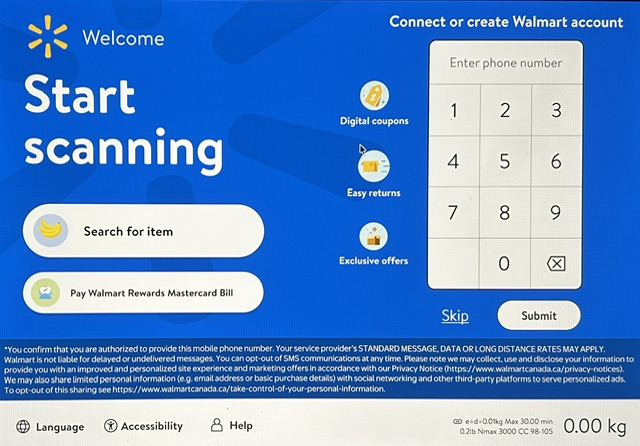
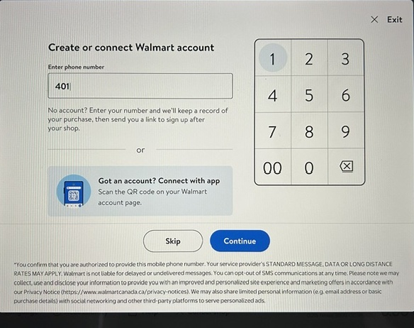

WALMART CANADA · APR–AUG 2025
Redesigning self-checkout for clarity at speed.
I led the end-to-end redesign of the Walmart Canada self-checkout experience, directing design and research across discovery, interviews, and usability testing. I led a senior designer and partnered with research, product, engineering, and business leadership.
- My leadership
- End-to-end design, research direction & usability testing
- Team
- Senior designer, research, 2 product leads, engineering & business leadership
- Constraints
- Bilingual needs, Zebra scanner hardware, Canadian privacy & opt-in requirements
- Outcome
- Informed the roadmap, improved key KPIs through the MVP launch & set direction for a future release
Clarity is how self-checkout moves faster.
Speed at self-checkout is not only about reducing steps. It is about removing the uncertainty that makes customers pause, reread, or ask for help. I examined barriers across the entire flow—from identification to produce lookup to payment.
- Make account identification feel valuable and as easy as possible.
- Give shoppers confidence when they cannot name a produce item precisely.
- Make the payment path clear enough to move through without hesitation.
01 — Make identification effortless and worth it
Customers could not connect to a benefit they did not understand.
Account identification could unlock a broader Walmart relationship, but Canadian privacy and opt-in requirements made every additional step consequential.
Research showed that the current experience did not make the Walmart account, its benefits, or the connection process clear enough to be worth the effort.

.jpeg)

The barrier to a benefit
Redeeming manufacturer coupons with Walmart ID asked customers to:
Lower the barrier to identification and entry
Account connection
- Auto-apply available coupons after identification to make the value immediate.
- Offer easier identification methods, including phone number, QR code, and credit-card matching.
- Use Scan & Go as another opportunity for seamless identification.
Account creation
- Use temporary account creation to reduce the initial commitment and enable immediate benefit redemption.
- Partner with the business team on touchpoint-relevant benefits and easier redemption.
02 — Offer multiple paths to confident produce lookup
When shoppers are unsure of a name, precision becomes friction.
Customers were not confident that the system knew the exact produce name—or that they had the correct name in mind. Bilingual requirements amplified the risk of relying on a single text-based path.
What we learned
Customers needed reassurance that the system could recognize their intent—and that their own term was right. Removing categorical search would trade fewer options for lower confidence.
Product direction
Retain category search alongside name and code lookup, then explore barcode scanning and other recognition paths that avoid manual produce lookup in the first place.
03 — Clarity, not fewer steps, creates speed
Removing a step did not remove uncertainty.
The team had removed payment-method selection to accelerate the path forward. But the lack of clarity about what would happen next—and which payment methods were accepted—slowed customers down.
Customers’ mental model was to review action components before proceeding. When options were hidden or ambiguous, they paused to assess the pin pad instead of moving through payment with confidence.
What we tested
We tested a clearer expression of optional actions alongside a direct path to payment: making payment methods visible and tappable while preserving a fast route to the pin pad for customers who were ready.
DESIGN PRINCIPLES
- Effortless for everyone
- Intuitive and predictable
- Optimized for speed and flow
This work changed how I frame ease and speed across projects: a seamless, efficient experience comes from understanding—and reducing—barriers holistically.
← back to desktop